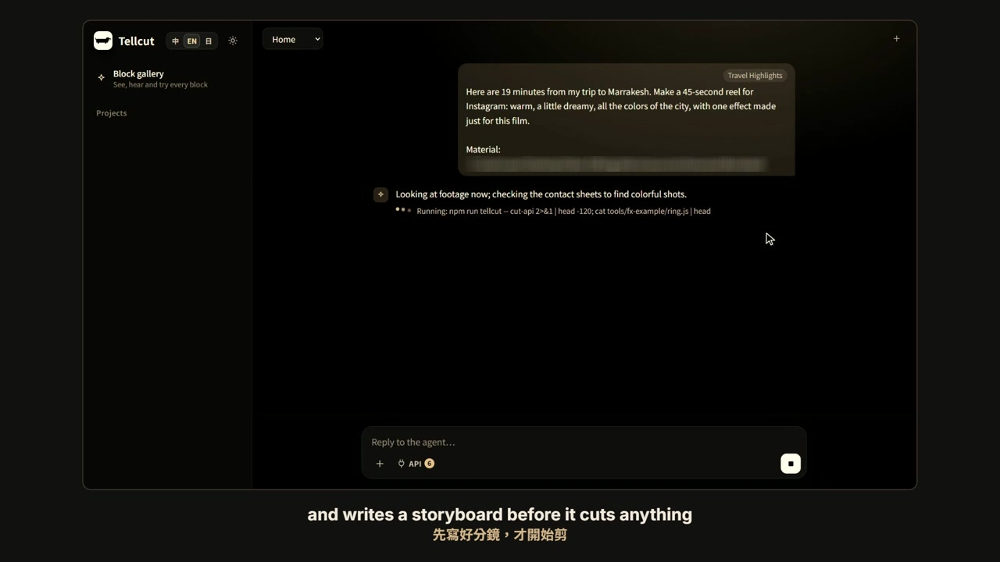
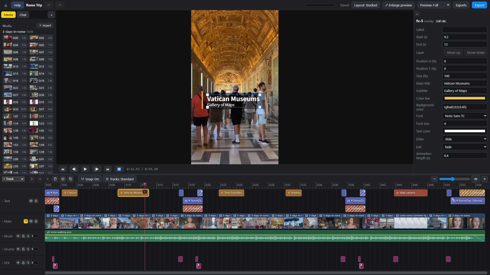
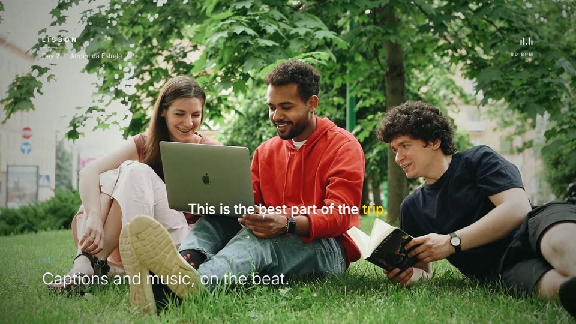
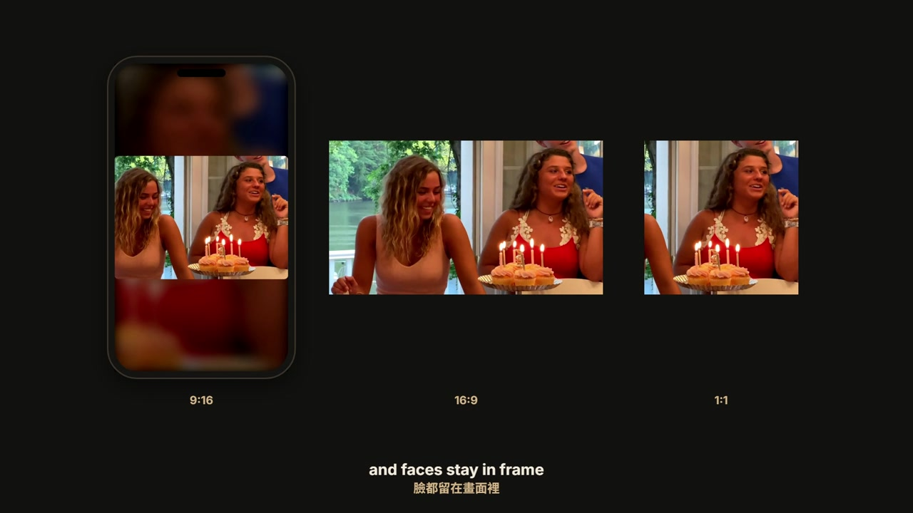
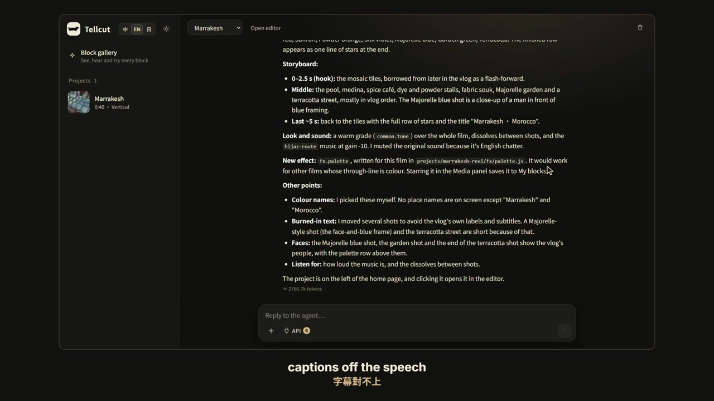
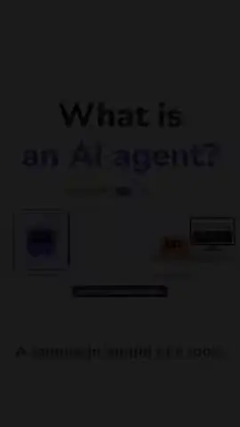

It watches every clip
It splits your footage into scenes, makes contact sheets, transcribes the speech, and finds the subtitles and watermarks burned into the source.
Drop in your footage and say what you want. An agent watches every clip, writes the storyboard and cuts a first draft, all on your own computer. Keep the effects and the style you like: your next film starts from there.

Switch between them at any time. Nothing the agent does overwrites what you changed yourself.
Import your footage and say what you want. The agent chooses the angle, the shots, the captions, the effects and the music, and cuts a first draft you can watch straight away.
The timeline works like any editor: split clips, swap in another shot, change the volume, edit a caption. Every change can be undone.
Select part of the timeline, right-click Ask Agent… and describe what it needs. You see a preview first; nothing changes until you press Accept.
It first works out what kind of film this is (food, travel, a lesson, an interview…) and writes the storyboard that kind of film needs before it cuts anything.

It splits your footage into scenes, makes contact sheets, transcribes the speech, and finds the subtitles and watermarks burned into the source.

More than 130 ready-made effects and sounds, a score composed to fit the length, and voice-over in the film's language with the captions aligned to it.

MP4 in 9:16, 16:9, 1:1 or 4:5, keeping faces in frame when it reframes footage for vertical.

Black frames, captions that drift from the speech, text running off the edge, clipped audio, the source's own text showing through: it fixes what it finds before you see the result.
Most editors forget everything the moment you close the project. Tellcut keeps what you liked.
The agent wrote a chalkboard title for your café video, a receipt that prints the menu, a map that draws your route. Press ☆ next to it and it goes into My blocks: from then on it's in every project, and the agent reaches for it before writing anything new.
Press Save as preset and the agent writes down how this film was made, point by point, in plain words. Cross out what you don't want, add your own, and it becomes a card on your home page.
A preset is a starting direction for one kind of film. Each sample below was made with one. The live-action samples are adapted from CC BY 3.0 videos on YouTube; the Brand Film and Explainer use no footage at all.
Scattered trip clips, cut into a vertical short.
55 s · Rome · footage by Jackie VlogsThe best moment of a long video, with a hook.
37 s · Marrakesh · footage by HelenThe best exchange, speakers marked, word-by-word captions.
58 s · footage by Lila RoseA short that makes people hungry.
58 s · Seoul · footage by 千千進食中Daily life with rhythm and a beginning, middle and end.
66 s · footage by Michaela BentoPhotos and clips into a film to play on the day.
88 s · footage by It's The DonnellysLooks like the company at a glance, from its logo.
57 s · drawn from the logo alone
One idea, with diagrams, charts and a quiz.
2 min 9 s · no footage“These are from our three days in Rome. Make a 60-second vertical short for IG with an opening that makes people keep watching.”
“Pick the best stretch of this podcast episode and make a one-minute Short. Make it clear who's talking.”
“Make a 45-second animated explainer on why cats purr, with voice-over.”
Tellcut is free. The agent runs on your own Claude login: on a Pro or Max plan nothing extra is charged; with an API key you pay per token.
The easiest way: install Claude Code, sign in, and paste it the text on the right. The full steps are in the install guide.
# paste this to Claude Code
Please install Tellcut for me: https://github.com/samuel325365/Tellcut
Follow INSTALL.md in the repo. If Node.js 24 or later or Google Chrome is missing, install it with winget first.
On a Mac, follow its "On a Mac" section instead: put Homebrew on my PATH if brew isn't found, then Homebrew for node@24 (added to my PATH in ~/.zshrc), Google Chrome and ffmpeg-full, and xcode-select --install if Xcode's command line tools are missing (wait while I finish the window it opens).
Download the repo into a Tellcut folder in my user folder, run npm run setup, then npm run doctor to confirm every item is ticked.
If anything fails, fix it and carry on. When everything is ready, tell me how to open Tellcut from now on.
把素材丟進來，說一句想要什麼樣的片。Agent 會看完每一段素材、寫好分鏡、剪出初版，全部在你自己的電腦上跑。喜歡的特效和風格可以留下來，下一支從那裡開始。
Tellcut 是免費、開放原始碼（MIT）的影片剪輯器，在瀏覽器裡用，支援 Windows 與 macOS。剪片的 Agent 是 Claude Code，用你自己的 Claude 帳號。介面有英文、中文、日文。